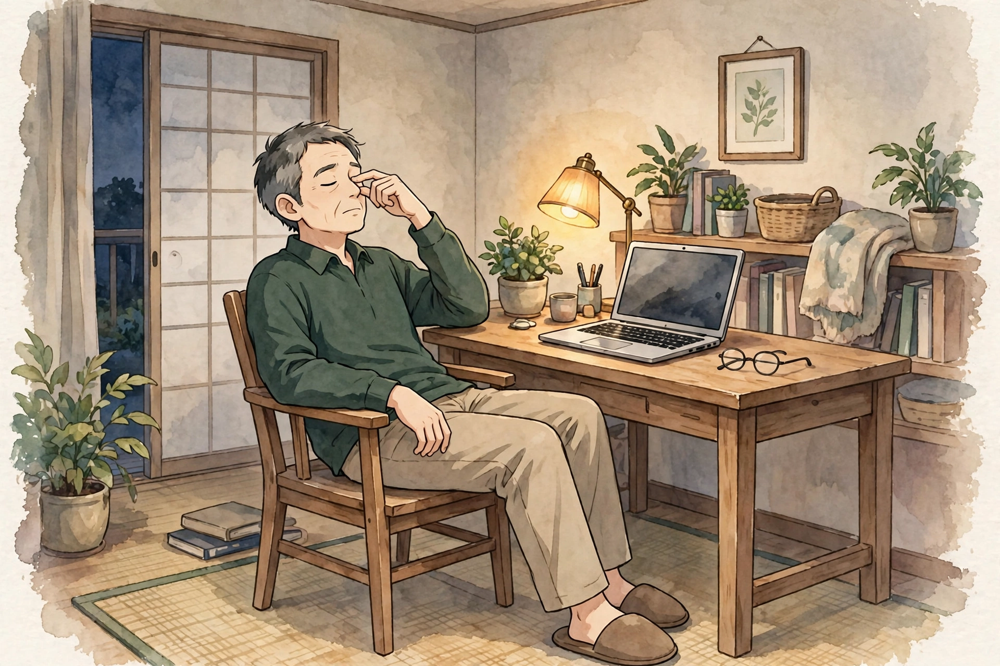

東三国で50代に気になる目の疲れ感
男性の年代と画面時間の見直しとセルフケア、受診の目安

「若いころは平気だったのに、50代に入ってから夕方になると目が重く感じる」「近くの文字がかすんで見え、スマートフォンを少し遠ざけて見るようになった」「眼鏡を外したほうが、近くの文字が見やすい日がある」。東三国や新大阪、淀川区周辺で働く50代の男性から、目にまつわるこうした声を聞くことがあります。50代の目の疲れ感の感じ方や背景は人によって異なり、一つの原因だけで説明できるものではありません。この記事では原因を断定するのではなく、50代に気になる目の疲れ感の一般的な考え方と、考えられる要因、年代を踏まえた画面時間の見直しと日常で試せるセルフケア、医療機関に相談したほうがよい目安をまとめます。デスクワーク後の場面に絞ったデスクワーク後の目の疲れ感についてのコラムや、朝の起き抜けに絞った朝に気になる目の疲れ感についてのコラムとは視点を分け、ここでは「50代という年代」と「画面時間」に焦点を当てます。お悩み別のページでも眼精疲労や頭の重さとしてまとめています。
50代の目の疲れ感とは：ピントの合わせにくさや乾きとして感じられることが多い悩み
一般に「目の疲れ」と呼ばれる感覚は、目の奥やまぶたの重さ、見え方のかすみ、乾く感じ、しょぼしょぼする感じなどとして自覚されることが多いとされています。50代ではこれに加えて、「近くの文字にピントが合うまでに時間がかかる」「遠くから近くへ視線を移したときに一瞬ぼやける」「夕方になると細かい文字を目で追うのがつらい」といった、ピント調節にまつわる感じ方を口にする方が増えてきます。一般に、目が近くの物にピントを合わせる力は年齢とともに少しずつ変化していくものとされており、40代ごろから自覚し始める方もいれば、50代に入って画面作業の多さと重なって気になり出す方もいます。出方も「夕方だけ気になる」「画面を見た時間が長い日に強くなる」「休みの日は楽に感じる」など人それぞれです。まずは「いつごろから、どんなときに、どんな感覚があるか」「若いころと比べて何が変わったか」を自分の言葉で整理しておくと、画面時間の見直しやセルフケアの選び方、専門家に相談するときの伝え方がスムーズになります。目の疲れ感とあわせて、首や肩の張り、頭の重さを感じる場合もあり、体の状態全体を振り返ってみることも一つの手がかりになります。
考えられる要因の整理
50代に目の疲れ感を意識する背景には、年代に伴う目の変化に、画面の見方や作業環境、生活習慣などが重なっている場合があります。以下は代表的なものとして挙げられる要因ですが、当てはまるかどうかや程度は人によって異なります。
目の疲れ感と重なって自覚されやすい部位の位置は、図1のとおりです。

50代の目の疲れ感も、目のまわりだけでなく、こめかみや額、首まわりの張りと重なって自覚されることが多いとされます。ピントを合わせようと目を凝らす時間が続くと、額や首まわりにも力が入りやすくなります。位置は目安です。
- 年代に伴うピント調節の変化：年齢とともに、近くの物にピントを合わせる力は少しずつ変化していくものとされています。近くの文字が見えにくい分、無意識に目を凝らしたり、文字を遠ざけたりする動作が増え、その積み重ねが夕方の目の重さとして感じられる場合があります。
- 眼鏡やコンタクトレンズ、老眼鏡の度数：若いころに合わせた眼鏡の度数のまま長く使っている、老眼鏡と遠くを見る眼鏡の使い分けが曖昧になっている、といった場合は、見え方に合わない状態で目を使い続けることになり、疲れ感の背景になることがあるとされています。度数の確認は眼科や眼鏡店など専門の場で行ってください。
- 画面時間の長さと休憩の取り方：仕事でも私生活でも画面を見る時間が長い50代は少なくありません。画面を見続ける間はまばたきの回数が減りやすいとされ、休憩を挟まない見続け方が、目の重さや乾きの感じ方に関わる場合があります。
- 画面との距離や姿勢：近くの文字を見ようとして画面に顔を近づける、反対に文字を遠ざけようとして背もたれに寄りかかる、といった姿勢が続くと、首の付け根や肩まわりの張りとあわせて目の疲れ感を意識しやすくなる方もいます。
- 涙の量や質の変化と、室内の乾燥：年齢とともに涙の量や質が変化し、目が乾きやすくなると感じる方もいます。エアコンの風が当たる席や乾燥した室内では、乾く感じやしょぼしょぼする感じが強まる場合があります。
- 睡眠不足や全身の疲労感との重なり：睡眠時間が不足している日や、仕事の疲れが残っている日は、目の重さを感じやすくなると話す方もいます。50代は仕事でも家庭でも役割が重なる年代で、休む時間の確保そのものが難しくなりがちな点も背景として考えられます。
- 目そのものや体の側の要因の可能性：目の疲れ感や見えにくさの背景には、ドライアイや白内障、緑内障といった目の病気や、体の状態が関わる場合もあります。年代の変化や生活習慣だけが要因とは限らない点は、受診の目安とあわせて押さえておきたいところです。
年代を踏まえた画面時間の見直しと、日常で試せるセルフケア
仕事の合間や帰宅後に取り入れやすい、無理なく続けられるものを中心にまとめました。強い力で押したり、目をこすったりはせず、痛みや見え方の変化があるときは無理をしないでください。気になる症状が強いときは、セルフケアより先に医療機関への相談をご検討ください。
- 画面から目を離し、遠くを見る休憩を挟む：20分ほど画面を見たら一度目を離し、窓の外や部屋の遠くのほうを数十秒ぼんやり眺める工夫です。会議の合間や資料を読み終えた区切りなど、作業の切れ目に合わせると続けやすくなります。
- まばたきを意識して、ゆっくり増やす：画面に集中しているとまばたきが浅くなりがちです。区切りのタイミングで、ゆっくりと意識して数回まばたきをするだけでも、乾きを感じる場面の見直しになります。
- 画面の距離・高さと文字サイズを見直す：画面を目から少し離し、見下ろす角度が強くなりすぎない高さに置く、文字サイズを一段大きくして無理に目を凝らさない設定にする、といった環境側の見直しです。椅子の高さや姿勢とあわせて整える方がいます。
- 蒸しタオルで目まわりを温める：帰宅後や入浴のついでに、温かい蒸しタオルを閉じた目の上に数分当てる形です（手順は図2）。熱すぎない温度で、気持ちよいと感じる範囲にとどめてください。
- こめかみや眉まわりをやさしく押さえる：両手の指の腹をこめかみや眉の上に軽く当て、小さく円を描くようにやさしく押さえる形です。力を入れず、皮膚をこすらない範囲で行ってください。
- 眼鏡や老眼鏡の度数を、節目で確認する：見え方に違和感が続くときは、眼科や眼鏡店で今の目に度数が合っているか確認することも、日常の見直しの一つです。仕事用と私生活用で距離に合った眼鏡を使い分けている方もいます。
- 首・肩まわりも一緒に動かし、夜の画面時間に区切りをつける：両肩を上げてストンと下ろす、肩をゆっくり回すなど、呼吸を止めずに軽く動かします。夜は就寝前のスマートフォンの時間に区切りをつけ、目と体を休ませる時間を確保する側に寄せておく方もいます。

①タオルを水で濡らして絞り、電子レンジなどで温めて蒸しタオルを作る（やけどに注意し、熱すぎない温度にする） ②椅子に座るか仰向けになり、目を閉じて蒸しタオルを目の上に当てる ③そのまま数分、呼吸を止めずに休む、が基本の流れです。熱さが強いときはタオルを広げて少し冷ましてから使ってください。
セルフケアは一度に全部をやろうとせず、続けられそうなものを一つ選ぶところから始めるのがおすすめです。感じ方には個人差があり、その日の仕事内容や睡眠、天気によっても変わりますので、無理のない範囲で行ってください。市販の目薬などを使う場合は、用法・用量や対象を商品の表示で確認し、頼る日が長く続くときは専門家への相談もご検討ください。
医療機関への受診を考える目安
次のような様子がある場合は、セルフケアや当院でのケアの前に、眼科などの医療機関への相談をご検討ください。当院は医療機関ではなく、症状の診断や治療は行いません。50代の目の不調の背景には、年代の変化以外の原因が関わる場合もあります。見え方の変化がなくても、長く眼科にかかっていない方は、節目の検診として相談する考え方もあります。
- 片目だけ見えにくい、視野の一部が欠ける・ゆがんで見えるなど、見え方に変化がある
- かすみが一日中続く、眼鏡や老眼鏡を替えても見えにくさが残る
- 目に強い痛みがある、目が大きく赤くなっている、目やにが続く
- 急に視力が落ちた感じがする、光がまぶしくてつらい状態が続く
- 頭痛や吐き気、めまいなど、ほかの症状も重なっている
- セルフケアや画面時間の見直しを続けても数週間以上よくなる様子がない、日に日に強くなっている
上記に当てはまらなくても、気になる症状が続くときは、早めに医療機関や専門家へ相談することが大切です。自己判断だけで様子を見続けないことも一つの目安になります。
北辰堂のご案内
北辰堂は、大阪市淀川区東三国二丁目にある男性専用の整体院です。施術歴30年の平賀伸人（鍼灸師・国家資格）が、整体とリラクゼーションを行います。当院では鍼灸施術は行いません。営業は平日・土曜17:00〜22:00、日曜10:00〜22:00の完全予約制です。50代で目の疲れ感が気になる方は、仕事帰りの平日・土曜の夕方や、休みの日の日曜の時間帯に、仕事での画面の見方や眼鏡の使い方も含めてご相談いただけます。プライバシーへの配慮のため、詳しい住所はご予約確定後にLINEでご案内します。
料金は60分 初回2,000円／2回目以降6,000円、90分 初回3,000円／2回目以降9,000円で、お支払いは現金のみです。施術を受けたからといって体の状態がどうなるかをお約束することはできませんが、その日の体の状態を確認しながら、目まわりだけでなく首や肩、姿勢全体の様子も見て、ゆっくり体を預けられる時間をご用意しています。仕事での画面との距離や文字の見方、夜の過ごし方など、日常で気になっていることも、カウンセリングの際にお聞かせください。気になるお悩みの例はお悩み別一覧にもまとめています。
コースの内容はメニュー・料金、施術者は施術者について、ご予約の流れは当日の流れとLINE予約の下書きづくり、場所についてはアクセスをご覧ください。あわせてデスクワーク後の目の疲れ感についてのコラムや朝に気になる目の疲れ感についてのコラム、50代の肩こりについてのコラム、顔のむくみ感についてのコラム、よくある質問もご参考ください。
ほかのコラム記事
関連するお悩みページ
ご予約・ご相談はLINEから
東三国・新大阪・淀川区周辺で、体のケアの相談先をお探しの方は、LINE公式アカウント（北辰堂）からお気軽にご連絡ください。現在の状態をお聞きしたうえで、施術の進め方をご案内します。
LINEで予約する